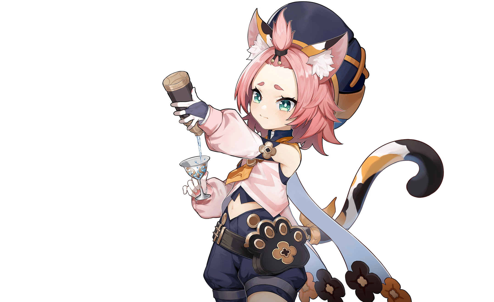

- 


身为西风骑士团的代理团长，琴一直忠于职守，为人们带来安宁。虽然并非天赋异禀，但通过 刻苦训练，如今的她已然能够独当一面。
当风魔龙的威胁开始临近，这位可靠的代理团长早已做好了准备，誓要守护蒙德。

活泼率直的少女，是蒙德城中唯一的侦察骑士。
擅长使用风之翼的安柏，连续三年蝉联蒙德城的「飞行冠军」。
作为西风骑士团的新星，今天的安柏依然活跃在第一线。
-
她是钟情于睡眠的知性魔女。
作为西风骑士团图书馆的管理员，聪明的丽莎总能以最有效的方式将遇到的问题统统解决。
虽然看似慵懒，但处变不惊的她似乎早已将一切尽数掌控。

在西风骑士团里，凯亚是代理团长最信任的副手。凡是交托于他的任务，总能得到解决。
在蒙德城中，风趣幽默的他同样深受人们的喜爱，然而这位谈吐不凡的骑士隐约有着什么不为人知的秘密。

既是西风教会的祈礼牧师，又是蒙德城的闪耀偶像。
对于习惯了传统吟游诗人的蒙德来说，「偶像」是还不习惯的新生事物。但在蒙德，人人都爱芭芭拉。
这就是自由之都的自由精神——对大家投来的喜爱，芭芭拉是这样满怀感激地总结的。

身为蒙德城第一富豪，风度翩翩的迪卢克总是以完美的贵公子形象示人。
对于习惯了传统吟游诗人的蒙德来说，「偶像」是还不习惯的新生事物。但在蒙德，人人都爱芭芭拉。
然而他真实的一面，是秉承坚定信念的战士，他那「不惜一切守护蒙德」的意志犹如火焰般炽热，令他能以恐怖的攻势，毫不留情地将一切敌人击溃。

在蒙德坊间的传闻里，有人说他是被狼收养的弃婴，有人说他是狼灵的化身…
利爪与苍雷在飞驰，狼永远与荒野为伴。
时至今日，狼少年仍凭借他野兽般的直觉，在林间与狼群一起奔猎。
来路不明的吟游诗人，有时唱一些老掉牙的旧诗，有时又会唱出谁也没听过的新歌。
喜欢苹果和热闹的气氛，讨厌奶酪和一切黏糊糊的物质。
在引导「风」的元素力时，元素的塑形往往外显为羽毛，因为他很中意看上去轻飘飘的东西。


西风骑士团，火花骑士！永远伴随闪光与爆炸出现！
——然后在琴团长严厉的目光注视下默默消失。
虽然新炸药的配方，很多都是在被关禁闭的时候想出来的……
但如果不被关禁闭的话，就更好了。


蒙德城冒险家协会为数不多的年轻冒险家，一直被莫名的「不幸」所纠缠。
他所创立的「班尼冒险团」，在「不幸」的影响下不断有成员长期告假，目前仅有团长一人在队活动，已处于解散边缘。
但在班尼特诚恳的请求下，蒙德城冒险家协会接待员凯瑟琳小姐为他保留了「班尼冒险团」的编制，同时，也向他隐瞒了其他成员早已跳槽的事实。
-
和蒙德城大多数普通年轻人一样，诺艾尔梦想着成为一名光荣的西风骑士。
尽管还没有获得骑士资格，她仍以女仆的身份在骑士团里工作，努力学习着骑士的言行礼仪。
她始终相信，只要坚持努力，总有一天能穿上那副象征荣耀的甲胄。

-
自称「断罪之皇女」，与名为奥兹的漆黑夜鸦同行的神秘少女。
目前正以调查员身份供职于冒险家协会。
通过自己的特殊能力加上奇妙的个性，还有本人不愿意承认的努力，菲谢尔成为了冒险家协会调查员中的新星，且成功赢得了大家的认可。
和蒙德城大多数普通年轻人一样，诺艾尔梦想着成为一名光荣的西风骑士。
尽管还没有获得骑士资格，她仍以女仆的身份在骑士团里工作，努力学习着骑士的言行礼仪。
她始终相信，只要坚持努力，总有一天能穿上那副象征荣耀的甲胄。 
对世间万物抱有强烈好奇心的炼金术士，隶属于西风骑士团，是阿贝多的助手。研究方向为「生物炼金」。
她希望用炼金术改造既有的生命形态，让这个世界更加丰富多彩。
虽说改造过程中偶尔会出现一些过于奇异的产物，但总体而言，砂糖在「生物炼金」方面成就斐然。
-
神秘的少女占星术士，声称自己是「伟大的占星术士莫娜」，拥有与名号相符的不俗实力，博学而高傲。
尽管过着拮据、清贫的生活，但她坚决不用占卜来牟利…正是这种坚持，导致莫娜总是在为生计发愁。

「猫尾酒馆」的超人气调酒师，蒙德酒业的超新星，传统势力的最大挑战者。
出身于清泉镇的猫耳猫尾少女，只要经迪奥娜之手调制过的酒类，都会变成难以想象的美味佳酿。
然而对于极度厌恶酒类的她来说，这到底是一种「祝福」还是「诅咒」呢？
-
阿贝多——现定居蒙德的炼金术士，效力于西风骑士团。
「天才」、「白垩之子」或「调查队长」…他不怎么在意称号和名望，只专注于研究课题。
财富和人脉不是他的目标。他渴望驾驭的，是从古到今深藏于人类头脑中的无上知识。

罗莎莉亚——蒙德城西风教会下属修女。
除了打扮哪里都不像神职人员的怪异修女。冷淡、锋利，如刀锋般锐利的女人。
行踪叵测，时常不告而别。身负着某种使命，但人们似乎并不明白她究竟代表着什么…
-
优菈——常年在外作战的「浪花骑士」，反叛的旧贵族末裔。
生于旧日宗室，身负罪恶血脉之人，的确需要独特的处世技巧，才能在偏见的高墙下安然行走。当然，这并不妨碍她与家族决裂，作为卓越的「浪花骑士」，在外游猎蒙德的敌人，完成她那意义独特的「复仇」。

来自诺拉的机敏猎手。随时能为正当之事挽弓放箭。
 琴
琴 安伯
安伯 丽莎
丽莎
 凯亚
凯亚
 芭芭拉
芭芭拉
 迪卢克
迪卢克
 雷泽
雷泽
 温迪
温迪- 可莉
 班尼特
班尼特 诺艾尔
诺艾尔
 菲谢尔
菲谢尔
 砂糖
砂糖
 莫娜
莫娜
 迪奥娜
迪奥娜
 阿贝多
阿贝多
- 罗莎莉亚
 优菈
优菈
 埃洛伊
埃洛伊